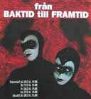

|
Startsidan
Böcker
Dramatik
Kultur-/barnprojekt
Margareta Lindberg Sigfrid |
|

|
|
Denna musikteaterföreställning är en lokalhistorisk kavalkad, som sträcker sig från den tid då Norrtälje bara var några blankblöta skär och ända in i framtiden. Projektet var Norrtäljes största satsning inför Kulturhuvudstadsåret 1998. Också i denna pjäs har jag hämtat stora delar av materialet ur en bok jag gjorde tillsammans med elever. På scenen stod ett 40-tal elever från Anne Kulles teatergrupper i Norrtälje. Pjäsen pågick i två akter - c:a 2 timmar inklusive 20-minuters paus. |